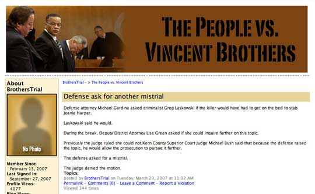

Launching the Blog
The Bakersfield.com website had been publishing staff and reader blogs since June 2005 but Logan’s blog would be the first from a trial. From the point of view of the top editors, a trial blog was just another news product. Jenner says he, Peterson, and McHenry sat down with Logan repeatedly to explain what they wanted: a reporter’s observations. “Lines or phrases such as ‘Brothers is silently weeping as crime scene photos of his children are shown to the jury’; or ‘Judge Bush is visibly upset by the defense’s objection,’ are the kinds of ‘you are there’ observations I was hoping for,” says Jenner. “To me, these are the kinds of observations an experienced reporter can make and include in traditional news stories (in print or any medium).”[14]
But for Logan, the new venture got off on the wrong foot.[15] Despite the explanations, Logan felt she never understood clearly what the editors hoped the trial blog would accomplish. Logan assumed her entries would carry her byline, and understood that they would focus on the trial—effectively they would be news updates filed to the blog established on the Brother Trial website. But she received no written instructions or memo that laid out expectations. Jenner never asked Logan to read the Tour de France blogs, nor did he mention them to her. Logan wondered what tone of voice she should adopt—informal and chatty, or more distant? Should she write about everything that she noticed? Or create a kind of transcript of the proceedings? What kind of development merited a blog posting versus a news update? What could she safely ignore?
For the first two weeks of the trial, Swenson assumed the job of crafting blog entries from Logan’s news updates. For this, he adopted a breezy, humorous tone. The day before the trial opened, for example, Swenson posted a blog item that examined who has time to sit on a jury for three months. “Let’s not forget our retirees,” he wrote. “They get the same pay if they are at home playing Canasta or if they’re spending their golden years in court.”[16] On February 22, he wrote an entry headlined, “We got gadgets at the trial.” It announced that a hand-held device would henceforth be used to file copy, and continued:
We’re doing all this to provide the most up-to-date information as quickly as possible. This beats my Smith-Corona all to heck. But I do miss the smell of rubber cement which we used to paste copy paper together. We don’t use copy paper any more. It amazes me that we continue to use me.
For the first two days, until the hand-held arrived, Logan phoned in news bulletins from the courthouse for the website. Demand was high. The editors wanted frequent news updates because readers could receive news alerts via the Internet or on their cellphones, and Web Editor McHenry, in particular, wanted to provide timely information. At noon on February 21, McHenry sent an email to editors with the subject line: “Can we get three sentences from Jessica…” followed by the body: “…NOW instead of waiting for a full story?”
After News Editor Peterson forwarded McHenry’s request, Logan responded: “Anytime, you can ask me a question… The only thing that gives me the jitters is when multiple editors start asking questions as soon as I get in.” She also betrayed some confusion about what was expected of her, and asked for more guidance. She wrote:
Whatever you want for the Web I am willing and able to produce it, you just need to let me know what you need and when. I really thrive on knowing the rules and having a plan ahead of time… Is there something specific you want from me for the rest of the day/week?
On February 23, Logan received the hand-held device. That relieved her of the need to use the phone for updates. But she quickly realized that it would not be easy simultaneously to listen to court proceedings, take notes, and send news updates. The hand-held, while better than a telephone, had a tiny keyboard, which required typing with thumbs only. So the paper ordered her a larger collapsible keyboard she could connect to the hand-held device. Until the keyboard arrived, Logan continued to send news updates to Swenson, who reworked them into short blog posts.
Meanwhile, editors wanted more. On February 27, McHenry, Jenner, and the managing editor asked Logan to file news updates more frequently. Logan did her best to oblige. But on March 1, McHenry suggested that she file as often as every 10 minutes. At this, Logan balked. She complained in an email to Swenson that “I don’t think I can do my job to the degree of accuracy demanded of me and meet these new requirements. I can’t listen to highly technical information and write at the same time.”
McHenry says he wanted Logan at least to phone in a few updates from the courthouse for the website during the day. He focused on using Logan to her full capacity. “If we have a reporter sitting in court all day, we want more than one story at the end of the day,” he says. The Californian could not afford to assign two dedicated reporters to the trial—one to write the “big picture” story and another to file updates and blog entries.
Footnotes
[14] Jenner's email to author November 19, 2007.
[15] Author’s interview with Jessica Logan on May 25, 2007 in Bakersfield, California. All further quotes from Logan, unless otherwise attributed, are from this interview.
[16] See: http://people.bakersfield.com/home/Blog/BrothersTrial/5919